台大教授李宏毅老師[機器學習概論2021][卷積神經網路 (Convolutional Neural Networks, CNN)]
📘 文章探討
1️⃣簡單介紹CNN
2️⃣Neural Network參數簡化
3️⃣Pooling
4️⃣Reference
1️⃣簡單介紹CNN
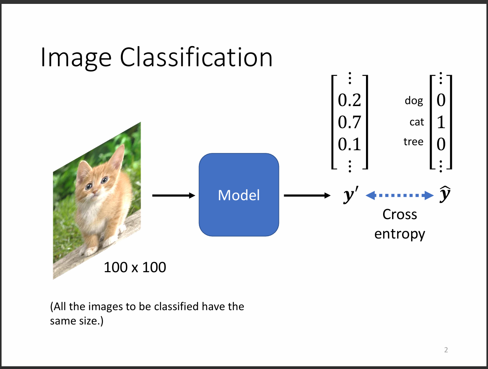
CNN是一個主要做圖片分類的Neural Network。首先我們會把圖片輸入進Model內，
切記圖片大小要一致，以上圖來說就是一個100*100大小的圖片輸入。
輸出則是這個圖片機器的預測機率，可以用one-hot vector表示每個類別。
希望預測的vector跟實際的vector之間的cross entropy越小越好。
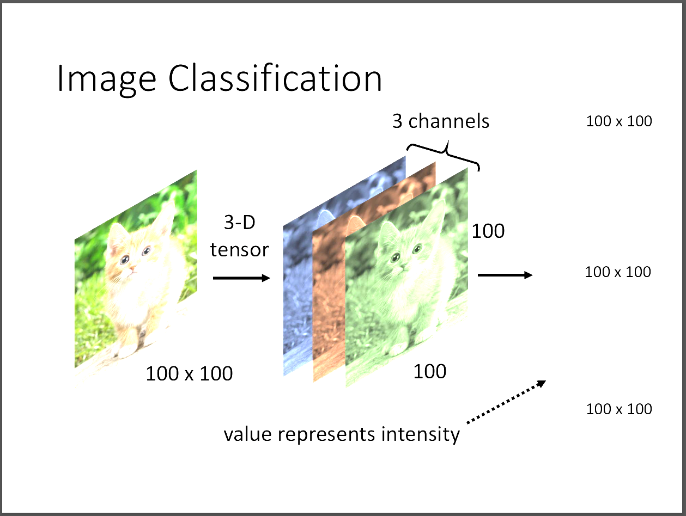
一張100*100的影像有3個channel，就是RGB那3個。小小補充，
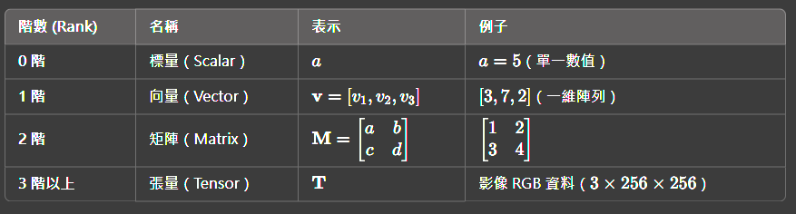
接著我們就把tensor拉直成vector，這樣就可以丟進模型訓練了。
2️⃣Neural Network參數簡化
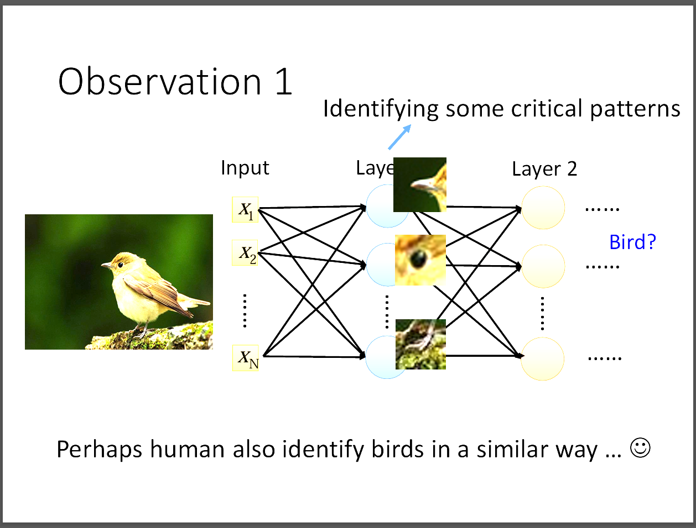
我們如果把剛剛30000個數值都丟進fully connected network裡面的話，
假定每個neuron會產生1000個weight，那總共的計算量達到3*107，
非常的龐大。因此我們開始思考到底要不要這麼多的weight，雖然說越多的weight，
模型越大越有彈性，但是容易overfitting而且並不是每個neuron都需要跟input每個dimension都需要一個weight。
就影像辨識的特性來說，只需要關注這張圖片有沒有一些重要的pattern，
比方說眼睛、嘴巴等等，相同於人類在觀察一張圖像時，
可能也只需要幾個特徵就可以明確地指出這張圖片是甚麼東西了。
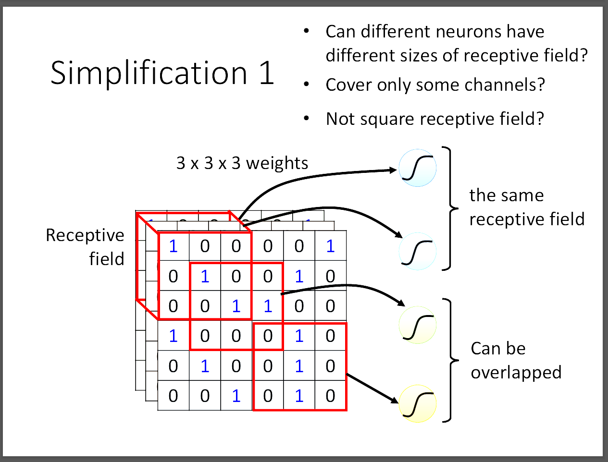
那我們要怎麼簡化參數呢?CNN介紹了一個方法，叫做Receptive fied。
所謂的Receptive field通常是一個3*3的大小，然後在乘上channel數。
所以一般來說如果考慮RGB三個全部的channel，會是3*3*3的大小放進一個neuron。
不同的neuron有自己的receptive field，彼此之間也可以overlap。
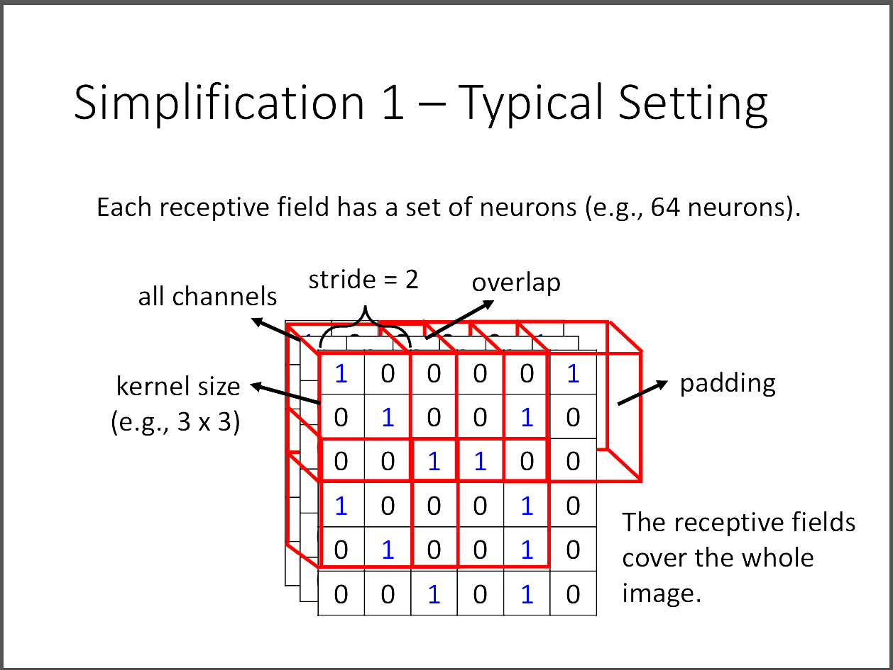
kernel size不考慮channel大小，所以在這張圖就是3*3的大小。
stride則是每個receptive field之間的間距要跨多大，通常就是1或2即可。
為什麼不要設太大的原因，就是如果兩個receptive field不重疊，然後某個重要的特徵剛好在他們中間，那這樣就沒有捕捉到這個重要特徵，容易導致模型訓練失敗。
每一個receptive field都會有多個neuron(64、128等等)，多個neuron可以學習到不同的特徵，比方說有學習鳥嘴的，有學習鳥眼睛的等等。
那如果stride過後超出影片的邊界之外怎麼辦?這時候就會用padding，有很多種不同的padding方法，可以補0，也可以取receptive field的平均值等等。
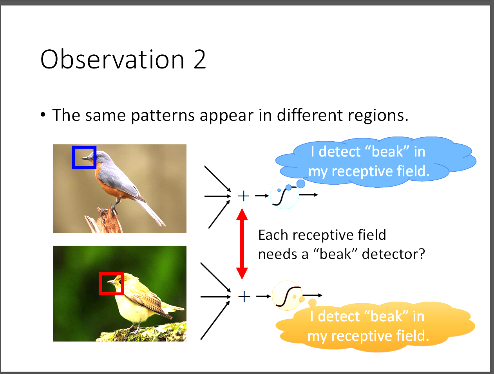
這張圖表示的是兩張圖片的鳥嘴位置不同，衍伸出一個問題，那就是如果我們在每個receptive field都有辨識鳥嘴的neuron會不會太多餘了。
其實可以簡化許多的neuron讓他們彼此之間能夠溝通，這裡的溝通技巧就是parameter sharing。
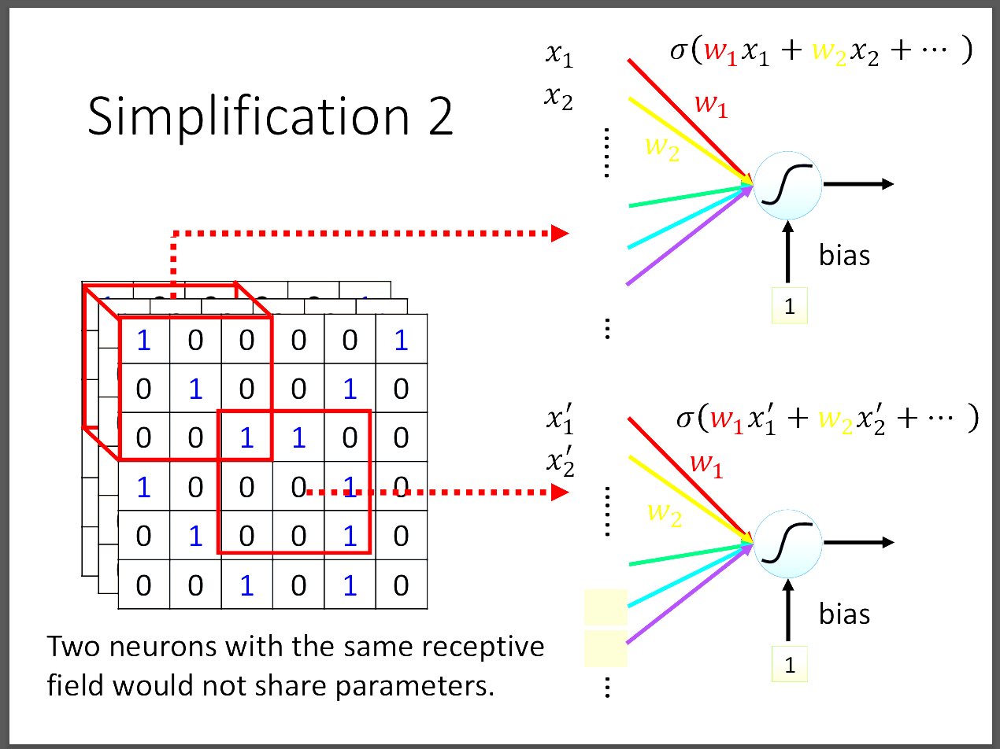
到底甚麼是parameter sharing，就是兩個neuron彼此之間的weights都相同，那可能會產生一個疑問，就是如果兩個neuron都相同，會不會輸出都一樣。
答案是完全不會!因為他們的輸入就不一樣了，兩者的輸入是不同的receptive field，輸出當然不會一樣。
若從filter的角度來看，其實就是filter掃過整張圖片計算的feature map。
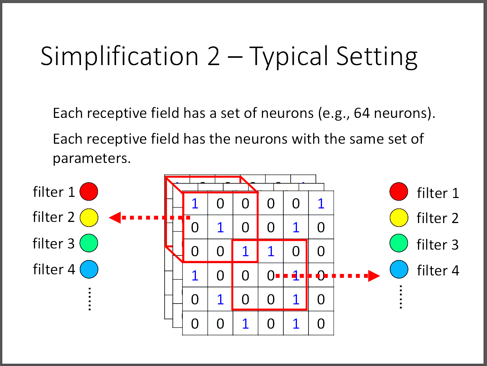
filter就是一個或一組neuron觀察相同的features，不同的receptive field有可能共享相同的filter來減少計算量以及overfitting的可能性。
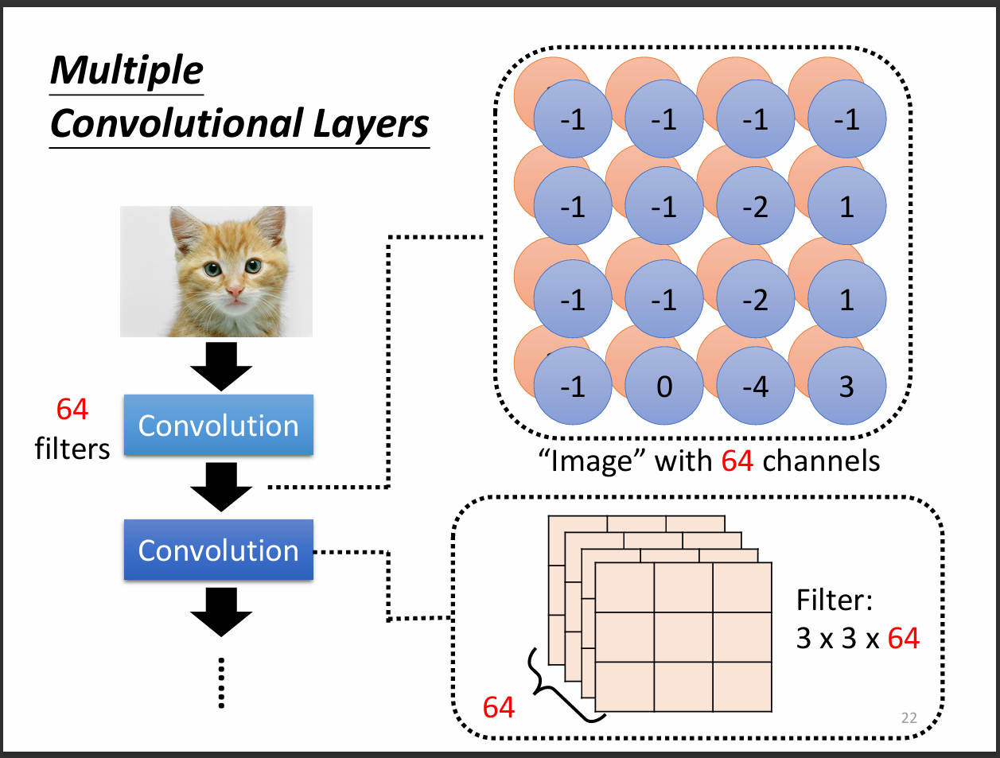
其實不用擔心說如果一直用3*3的filter會不會只能看到小的pattern，因為當stride=2時，我們再掃一次圖片的時候其實相當於掃過原圖的5*5。
3️⃣Pooling
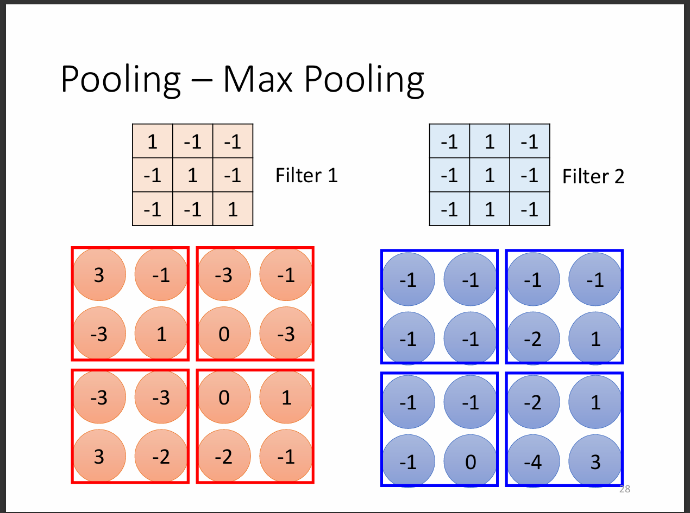簡化參數的方法還有一種叫做subsampling，就是把feature map drop掉一行或一列或以上，大多時候不會影響到訓練品質與辨識的情況。
這裡我們介紹一個重要的方法，max pooling。從圖片中我們看到，當用filter掃過圖片之後得到一組feature map，
可以把feature map取其中的2*2, 3*3或其他範圍中的最大值，這樣我們相當於取道最有用的資訊而放棄不太重要的資訊。
所以往往我們在convolution之後會做pooling，彼此間隔使用。但如果計算資源足夠的話也不用pooling。
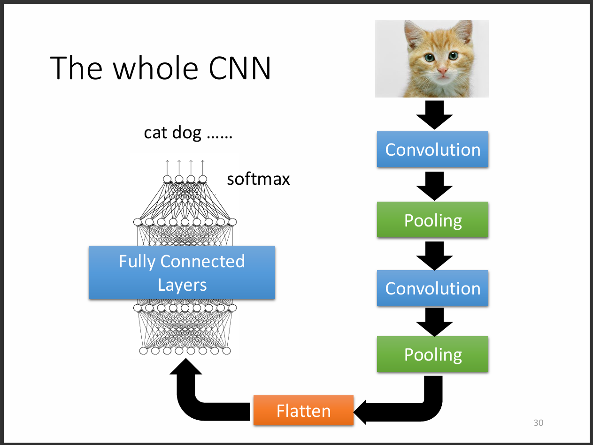
模型大致會長這樣。